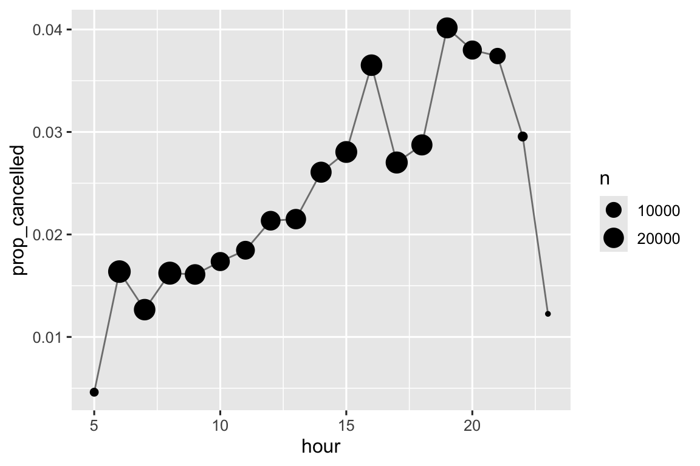
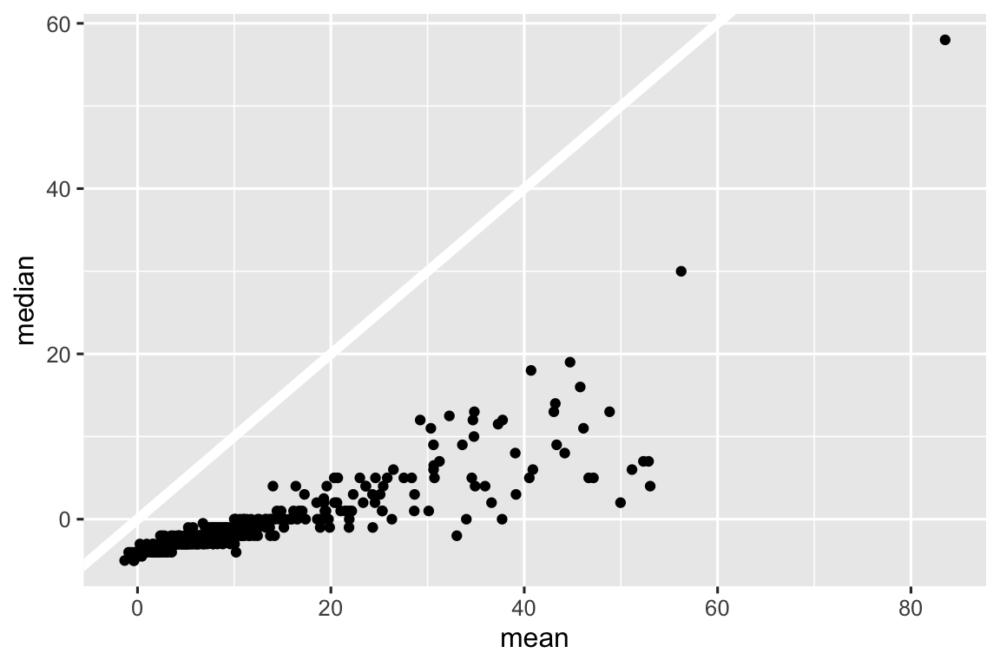
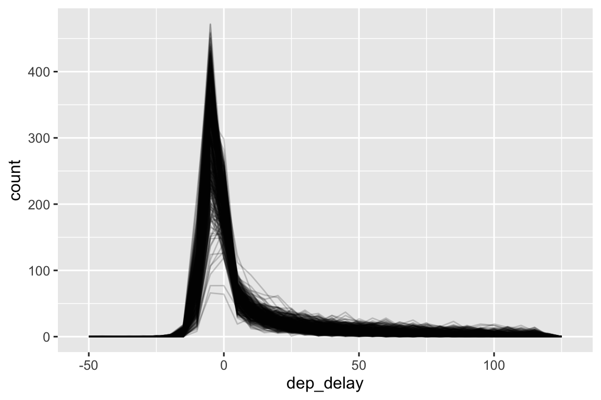

library(tidyverse)
library(nycflights13)13 数值
13.1 引言
数值向量是数据科学的基石，你在本书的前面部分已经多次使用过它们。现 在是系统地审视你在R中可以对它们做什么的时候了，确保你能够很好地应对任何涉及数值向量的未来问题。
我们将首先为你提供几个工具，以便在你有字符串时生成数字，然后更详细地介绍count()函数。然 后，我们将深入探讨与mutate()搭配使用的各种数值转换，包括可以应用于其他类型向量的更一般的转换，但通常与数值向量一起使用。最 后，我们将介绍与summarize()搭配使用的汇总函数，并向你展示它们也可以与mutate()一起使用。
13.1.1 必要条件
本章主要使用来自基础R的函数，这些函数无需加载任何包即可使用。但 我们仍然需要tidyverse，因为我们将在tidyverse的函数（如mutate()和filter()）内部使用这些基础R函数。和 上一章一样，我们将使用nycflights13数据集的真实示例，以及使用c()和tribble()创建的玩具示例。
13.2 数字化
在大多数情况下，你会获得R的数字类型之一的整数或双精度数字。然 而，在某些情况下你可能会遇到以字符串形式出现的数字，可能是因为从列标题中转换得到它们，或者是因为在数据导入过程中出现了某些问题。
readr包提供了两个有用的函数来将字符串解析为数字：parse_double()和parse_number()。当 你遇到以字符串形式写入的数字时，可以使用parse_double()。
x <- c("1.2", "5.6", "1e3")
parse_double(x)
#> [1] 1.2 5.6 1000.0当字符串中包含你想要忽略的非数字文本时，使用parse_number()。这 对于货币数据和百分比特别有用：
x <- c("$1,234", "USD 3,513", "59%")
parse_number(x)
#> [1] 1234 3513 5913.3 计数
令人惊讶的是，仅仅通过计数和一些基本的算术运算你就能够完成不少数据科学工作，因此dplyr致力于通过count()函数使计数尽可能简单。这 个函数非常适合在分析过程中进行快速探索和检查：
flights |> count(dest)
#> # A tibble: 105 × 2
#> dest n
#> <chr> <int>
#> 1 ABQ 254
#> 2 ACK 265
#> 3 ALB 439
#> 4 ANC 8
#> 5 ATL 17215
#> 6 AUS 2439
#> # ℹ 99 more rows尽管在 章节 4 给出了建议，但我们通常还是将count()放在单独的一行，因为它通常在控制台中用于快速检查计算是否按预期工作。
如果你想看到最常见的值，添加 sort = TRUE:
flights |> count(dest, sort = TRUE)
#> # A tibble: 105 × 2
#> dest n
#> <chr> <int>
#> 1 ORD 17283
#> 2 ATL 17215
#> 3 LAX 16174
#> 4 BOS 15508
#> 5 MCO 14082
#> 6 CLT 14064
#> # ℹ 99 more rows请记住，如果希望查看所有值，可以使用|> View()或|> print(n = Inf)。
你可以通过group_by()、summarize()和n()“手动”执行相同的计算。这 是有用的，因为它允许你同时计算其他汇总统计量：
flights |>
group_by(dest) |>
summarize(
n = n(),
delay = mean(arr_delay, na.rm = TRUE)
)
#> # A tibble: 105 × 3
#> dest n delay
#> <chr> <int> <dbl>
#> 1 ABQ 254 4.38
#> 2 ACK 265 4.85
#> 3 ALB 439 14.4
#> 4 ANC 8 -2.5
#> 5 ATL 17215 11.3
#> 6 AUS 2439 6.02
#> # ℹ 99 more rowsn()是一个特殊的汇总函数，它不接受任何参数，而是访问关于“当前”组的信息。这 意味着它只能在dplyr的函数内部使用：
n()
#> Error in `n()`:
#> ! Must only be used inside data-masking verbs like `mutate()`,
#> `filter()`, and `group_by()`.n()和count()有几个变体，你可能会觉得它们有用：
n_distinct(x)计算一个或多个变量的不同（唯一）值的数量。例 如，我们可以找出哪些目的地有最多的航空公司提供服务：flights |> group_by(dest) |> summarize(carriers = n_distinct(carrier)) |> arrange(desc(carriers)) #> # A tibble: 105 × 2 #> dest carriers #> <chr> <int> #> 1 ATL 7 #> 2 BOS 7 #> 3 CLT 7 #> 4 ORD 7 #> 5 TPA 7 #> 6 AUS 6 #> # ℹ 99 more rows加权计数是求和。例 如你可以“计数”每架飞机飞行的英里数：
flights |> group_by(tailnum) |> summarize(miles = sum(distance)) #> # A tibble: 4,044 × 2 #> tailnum miles #> <chr> <dbl> #> 1 D942DN 3418 #> 2 N0EGMQ 250866 #> 3 N10156 115966 #> 4 N102UW 25722 #> 5 N103US 24619 #> 6 N104UW 25157 #> # ℹ 4,038 more rows加权计数是一个常见的问题，所以
count()函数有一个wt参数来实现同样的功能：flights |> count(tailnum, wt = distance)可以通过结合
sum()和is.na()来计数缺失值。在flights数据集中，这表示被取消的航班：flights |> group_by(dest) |> summarize(n_cancelled = sum(is.na(dep_time))) #> # A tibble: 105 × 2 #> dest n_cancelled #> <chr> <int> #> 1 ABQ 0 #> 2 ACK 0 #> 3 ALB 20 #> 4 ANC 0 #> 5 ATL 317 #> 6 AUS 21 #> # ℹ 99 more rows
13.3.1 练习
- 如何使用
count()来计算给定变量中缺失值的行数？ - 将以下对
count()的调用扩展为使用group_by()、summarize()和arrange():flights |> count(dest, sort = TRUE)flights |> count(tailnum, wt = distance)
13.4 数值转换
转换函数与mutate()配合得很好，因为它们的输出长度与输入相同。绝 大多数转换函数已经内置在R的基本包中。列 出所有函数是不切实际的，所以本节将展示一些最有用的。例 如，虽然R提供了你可能梦寐以求的所有三角函数，但我们在这里没有列出它们，因为它们在数据科学中很少需要。
13.4.1 算术和循环规则
在 章节 2 ，我们介绍了算术运算（+, -, *, /, ^）的基础知识，并在此之后多次使用了它们。这 些函数不需要过多的解释，因为它们执行的是你在小学就学过的运算。但 是，我们需要简短地讨论一下循环规则（recycling rules），这些规则决定了当左侧和右侧的长度不同时会发生什么。这 对于像flights |> mutate(air_time = air_time / 60)这样的操作很重要，因为在/的左侧有336,776个数字，而右侧只有一个。
R通过循环或重复较短的向量来处理长度不匹配的情况。如 果我们在数据框之外创建一些向量，就能更容易地看到这个操作过程：
x <- c(1, 2, 10, 20)
x / 5
#> [1] 0.2 0.4 2.0 4.0
# is shorthand for
x / c(5, 5, 5, 5)
#> [1] 0.2 0.4 2.0 4.0通常，你只想循环单个数字（即长度为1的向量），但R会循环任何较短的向量。如 果较长的向量不是较短的向量的倍数，R通常会（但不总是）给出警告：
x * c(1, 2)
#> [1] 1 4 10 40
x * c(1, 2, 3)
#> Warning in x * c(1, 2, 3): longer object length is not a multiple of shorter
#> object length
#> [1] 1 4 30 20这些循环规则也适用于逻辑比较（==, <, <=, >, >=, !=），如果你不小心使用了==而不是%in%，并且数据框的行数不巧地匹配了这些规则，可能会导致一个令人惊讶的结果。例 如，考虑以下代码，它试图找出1月和2月的所有航班：
flights |>
filter(month == c(1, 2))
#> # A tibble: 25,977 × 19
#> year month day dep_time sched_dep_time dep_delay arr_time sched_arr_time
#> <int> <int> <int> <int> <int> <dbl> <int> <int>
#> 1 2013 1 1 517 515 2 830 819
#> 2 2013 1 1 542 540 2 923 850
#> 3 2013 1 1 554 600 -6 812 837
#> 4 2013 1 1 555 600 -5 913 854
#> 5 2013 1 1 557 600 -3 838 846
#> 6 2013 1 1 558 600 -2 849 851
#> # ℹ 25,971 more rows
#> # ℹ 11 more variables: arr_delay <dbl>, carrier <chr>, flight <int>, …代码运行无误，但它没有返回你想要的结果。由 于循环规则，它找到了在奇数行出发的1月航班和在偶数行出发的2月航班。不 幸的是，由于flights的行数是偶数所以没有给出警告。
为了防止这种静默失败的情况，tidyverse的大多数函数使用了一种更严格的循环形式，即仅循环单个值。不 幸的是，这在当前情况下或许多其他情况下并不起作用，因为关键的计算是由基础R函数==执行的，而不是filter()。
13.4.2 最小值和最大值
算术函数对变量对进行操作。两 个紧密相关的函数是pmin()和pmax()，当给定两个或更多变量时，它们将返回每行中的最小或最大值：
df <- tribble(
~x, ~y,
1, 3,
5, 2,
7, NA,
)
df |>
mutate(
min = pmin(x, y, na.rm = TRUE),
max = pmax(x, y, na.rm = TRUE)
)
#> # A tibble: 3 × 4
#> x y min max
#> <dbl> <dbl> <dbl> <dbl>
#> 1 1 3 1 3
#> 2 5 2 2 5
#> 3 7 NA 7 7请注意，这些函数与min()和max()这样的汇总函数是不同的，后者接受多个观测值并返回一个单一的值。当 发现所有的最小值和所有的最大值都相同时，你可以判断你可能使用了错误的形式。
df |>
mutate(
min = min(x, y, na.rm = TRUE),
max = max(x, y, na.rm = TRUE)
)
#> # A tibble: 3 × 4
#> x y min max
#> <dbl> <dbl> <dbl> <dbl>
#> 1 1 3 1 7
#> 2 5 2 1 7
#> 3 7 NA 1 713.4.3 模运算
模运算（modular arithmetic）是你在学习十进制之前所做的数学运算的技术名称，即除法产生一个整数商和一个余数。在 R中，%/%执行整数除法，而%%计算余数。
1:10 %/% 3
#> [1] 0 0 1 1 1 2 2 2 3 3
1:10 %% 3
#> [1] 1 2 0 1 2 0 1 2 0 1模运算对于flights数据集来说很有用，因为我们可以使用它来将sched_dep_time变量分解为hour和minute。
flights |>
mutate(
hour = sched_dep_time %/% 100,
minute = sched_dep_time %% 100,
.keep = "used"
)
#> # A tibble: 336,776 × 3
#> sched_dep_time hour minute
#> <int> <dbl> <dbl>
#> 1 515 5 15
#> 2 529 5 29
#> 3 540 5 40
#> 4 545 5 45
#> 5 600 6 0
#> 6 558 5 58
#> # ℹ 336,770 more rows我们可以将上述方法与来自 小节 12.4 的mean(is.na(x))技巧结合起来查看取消航班的比例在一天中的变化情况。结 果如图 图 13.1 所示。
flights |>
group_by(hour = sched_dep_time %/% 100) |>
summarize(prop_cancelled = mean(is.na(dep_time)), n = n()) |>
filter(hour > 1) |>
ggplot(aes(x = hour, y = prop_cancelled)) +
geom_line(color = "grey50") +
geom_point(aes(size = n))

13.4.4 对数
对数在处理跨越多个数量级的数据以及将指数增长转换为线性增长时是非常有用的转换方法。在 R中，你可以选择三种对数：log()（自然对数，底为e）、log2()（底为2）和log10()（底为10）。我 们推荐使用log2()或log10()。l og2()易于解释，因为在对数尺度上相差1对应于原始尺度上的加倍，相差-1对应于减半；而log10()易于反向转换，因为（例如）3 是 10 的 3 次方，即 1000。l og()的反函数是exp()；要计算log2()或log10()的反函数，你需要使用2^或10^。
13.4.5 四舍五入
使用round(x)将一个数字四舍五入到最接近的整数:
round(123.456)
#> [1] 123你可以使用第二个参数digits来控制四舍五入的精度。round(x, digits)会将x四舍五入到最近的 10^-n，所以digits = 2会将x四舍五入到最近的 0.01。这 个定义很有用，因为它意味着round(x, -3)会将x四舍五入到最近的千位，而它确实是这样做的：
round(123.456, 2) # two digits
#> [1] 123.46
round(123.456, 1) # one digit
#> [1] 123.5
round(123.456, -1) # round to nearest ten
#> [1] 120
round(123.456, -2) # round to nearest hundred
#> [1] 100round()有一个看起来有些奇怪的特性，第一眼看上去这可能会让人吃惊：
round(c(1.5, 2.5))
#> [1] 2 2round()使用的是所谓的“向偶数舍入”或“银行家舍入”方法：如果一个数字正好在两个整数之间，那么它会被舍入到偶数整数。这 是一个很好的策略，因为它使得舍入是无偏的：一半的 0.5 被向上舍入，而另一半被向下舍入。
round()与floor()和ceiling()相对应。floor()总是向下舍入，而ceiling()总是向上舍入。
x <- 123.456
floor(x)
#> [1] 123
ceiling(x)
#> [1] 124这些函数（floor()和ceiling()）没有digits参数，所以你可以先将数字缩小比例，然后四舍五入，最后再扩大回原来的比例：
# Round down to nearest two digits
floor(x / 0.01) * 0.01
#> [1] 123.45
# Round up to nearest two digits
ceiling(x / 0.01) * 0.01
#> [1] 123.46如果你想要将round()舍入到某个数的倍数，你可以使用相同的技巧：
# Round to nearest multiple of 4
round(x / 4) * 4
#> [1] 124
# Round to nearest 0.25
round(x / 0.25) * 0.25
#> [1] 123.513.4.6 将数字切分成区间
使用cut()1函数可以将一个数值向量拆分（也称为分箱或分组）成离散的区间：
x <- c(1, 2, 5, 10, 15, 20)
cut(x, breaks = c(0, 5, 10, 15, 20))
#> [1] (0,5] (0,5] (0,5] (5,10] (10,15] (15,20]
#> Levels: (0,5] (5,10] (10,15] (15,20]breaks不需要是等距的：
cut(x, breaks = c(0, 5, 10, 100))
#> [1] (0,5] (0,5] (0,5] (5,10] (10,100] (10,100]
#> Levels: (0,5] (5,10] (10,100]你可以选择性地提供你自己的labels。请 注意，labels的数量应该比breaks少一个。
cut(x,
breaks = c(0, 5, 10, 15, 20),
labels = c("sm", "md", "lg", "xl")
)
#> [1] sm sm sm md lg xl
#> Levels: sm md lg xl任何超出breaks范围的值都会变成NA：
y <- c(NA, -10, 5, 10, 30)
cut(y, breaks = c(0, 5, 10, 15, 20))
#> [1] <NA> <NA> (0,5] (5,10] <NA>
#> Levels: (0,5] (5,10] (10,15] (15,20]查看文档以了解其他有用的参数，如right和include.lowest，这些参数控制区间是[a, b)还是 (a, b]，以及是否应将最低区间设为[a, b]。
13.4.7 累积和滚动聚合
基础 R 提供了cumsum(),cumprod(),cummin(),cummax()函数，用于计算连续或累积的和、积、最小值和最大值。d plyr 包提供了cummean()函数用于计算累积平均值。在 实践中，累积和是最常遇到的：
x <- 1:10
cumsum(x)
#> [1] 1 3 6 10 15 21 28 36 45 55如果你需要更复杂的滚动或滑动聚合，可以尝试使用slider包。
13.4.8 练习
用文字解释用于生成@fig-prop-cancelled 的每一行代码的作用。
R提供了什么三角函数？猜 测一些名字并查找文档。这 些函数用度数还是弧度？
目前，
dep_time和sched_dep_time看起来很方便，但是难以用于计算，因为它们并不是真正的连续数字。你 可以通过运行下面的代码来看到基本问题：每小时之间都存在间隙。flights |> filter(month == 1, day == 1) |> ggplot(aes(x = sched_dep_time, y = dep_delay)) + geom_point()将它们转换为更真实的时间表示（可以是自午夜起的小时数（以小数形式）或分钟数）。
将
dep_time和arr_time四舍五入到最近的五分钟。
13.5 通用转换
以下部分描述了一些通常与数值向量一起使用的通用转换，但它们也可以应用于所有其他列类型。
13.5.1 秩（Ranks）
dplyr 提供了一系列受 SQL 启发的排秩函数，但你应该始终从dplyr::min_rank()开始。它 使用了处理并列名次（相持）的标准方法，例如，第1名、第2名、第2名、第4名。
x <- c(1, 2, 2, 3, 4, NA)
min_rank(x)
#> [1] 1 2 2 4 5 NA请注意，最小的值获得最小的秩；利用desc(x)可以让最大的值获得最小的秩：
min_rank(desc(x))
#> [1] 5 3 3 2 1 NA如果min_rank()不符合你的需求，请查看它的变体函数dplyr::row_number()、dplyr::dense_rank()、dplyr::percent_rank()和dplyr::cume_dist()。查 看文档以获取详细信息。
df <- tibble(x = x)
df |>
mutate(
row_number = row_number(x),
dense_rank = dense_rank(x),
percent_rank = percent_rank(x),
cume_dist = cume_dist(x)
)
#> # A tibble: 6 × 5
#> x row_number dense_rank percent_rank cume_dist
#> <dbl> <int> <int> <dbl> <dbl>
#> 1 1 1 1 0 0.2
#> 2 2 2 2 0.25 0.6
#> 3 2 3 2 0.25 0.6
#> 4 3 4 3 0.75 0.8
#> 5 4 5 4 1 1
#> 6 NA NA NA NA NA你可以通过选择适当的ties.method参数来使用 R 的基础函数rank()来达到许多相同的结果；你也可能希望通过设置na.last = "keep"将 NAs 值保留为 NA。
row_number()在 dplyr 的函数内部使用时也可以不带任何参数。在 这种情况下它会给出“当前”行的编号。当 与%%或%/%结合使用时，它可以成为将数据划分为大小相似的组的有用工具：
df <- tibble(id = 1:10)
df |>
mutate(
row0 = row_number() - 1,
three_groups = row0 %% 3,
three_in_each_group = row0 %/% 3
)
#> # A tibble: 10 × 4
#> id row0 three_groups three_in_each_group
#> <int> <dbl> <dbl> <dbl>
#> 1 1 0 0 0
#> 2 2 1 1 0
#> 3 3 2 2 0
#> 4 4 3 0 1
#> 5 5 4 1 1
#> 6 6 5 2 1
#> # ℹ 4 more rows13.5.2 偏移量（Offsets）
dplyr::lead()和dplyr::lag()允许你引用“当前”值之前或之后的值。它 们会返回一个与输入长度相同的向量，并在开始或结束时用 NAs 填充：
x <- c(2, 5, 11, 11, 19, 35)
lag(x)
#> [1] NA 2 5 11 11 19
lead(x)
#> [1] 5 11 11 19 35 NAx - lag(x)给出当前值和前一个值之间的差值。x - lag(x) #> [1] NA 3 6 0 8 16x == lag(x)告诉你当前值何时发生改变。x == lag(x) #> [1] NA FALSE FALSE TRUE FALSE FALSE
你可以通过使用第二个参数n来实现超过一个位置的向前或向后取值。
13.5.3 连续标识符
有时，每当某个事件发生时你都希望开始一个新组。例 如在查看网站数据时，你通常会希望将事件划分为不同会话（sessions），即当距离上次活动超过 x 分钟时你会开始一个新会话。比 如，想象你有某人访问网站的时间记录：
events <- tibble(
time = c(0, 1, 2, 3, 5, 10, 12, 15, 17, 19, 20, 27, 28, 30)
)并且你已经计算了每个事件之间的时间间隔，并判断了是否存在足够大的间隔以符合标准：
events <- events |>
mutate(
diff = time - lag(time, default = first(time)),
has_gap = diff >= 5
)
events
#> # A tibble: 14 × 3
#> time diff has_gap
#> <dbl> <dbl> <lgl>
#> 1 0 0 FALSE
#> 2 1 1 FALSE
#> 3 2 1 FALSE
#> 4 3 1 FALSE
#> 5 5 2 FALSE
#> 6 10 5 TRUE
#> # ℹ 8 more rows但是，我们如何从逻辑向量转换为可以使用group_by()进行分组的东西呢？c umsum()函数（来自 小节 13.4.7 ）此时就派上了用场，当存在间隔（即has_gap为TRUE）时，它会增加分组编号（来自@sec-numeric-summaries-of-logicals ）：
events |> mutate(
group = cumsum(has_gap)
)
#> # A tibble: 14 × 4
#> time diff has_gap group
#> <dbl> <dbl> <lgl> <int>
#> 1 0 0 FALSE 0
#> 2 1 1 FALSE 0
#> 3 2 1 FALSE 0
#> 4 3 1 FALSE 0
#> 5 5 2 FALSE 0
#> 6 10 5 TRUE 1
#> # ℹ 8 more rows创建分组变量的另一种方法是consecutive_id()，它会在其参数之一发生变化时开始一个新组。例 如，受到this stackoverflow question的启发，假设你有一个包含许多重复值的数据框：
df <- tibble(
x = c("a", "a", "a", "b", "c", "c", "d", "e", "a", "a", "b", "b"),
y = c(1, 2, 3, 2, 4, 1, 3, 9, 4, 8, 10, 199)
)如果你想要保留每个重复值x的第一行，你可以使用group_by()、consecutive_id()和slice_head()。
df |>
group_by(id = consecutive_id(x)) |>
slice_head(n = 1)
#> # A tibble: 7 × 3
#> # Groups: id [7]
#> x y id
#> <chr> <dbl> <int>
#> 1 a 1 1
#> 2 b 2 2
#> 3 c 4 3
#> 4 d 3 4
#> 5 e 9 5
#> 6 a 4 6
#> # ℹ 1 more row13.5.4 练习
使用排秩函数找出延误时间最长的10个航班。如 果出现并列的情况，你打算如何处理？请 仔细阅读
min_rank()函数的文档。哪架飞机（
tailnum）的准时记录最差？如果你想尽可能避免延误，你应该在一天中的哪个时间段飞行？
flights |> group_by(dest) |> filter(row_number() < 4)这段代码做了什么？flights |> group_by(dest) |> filter(row_number(dep_delay) < 4)这段代码又做了什么？对于每个目的地，计算延误的总分钟数；对于每个航班，计算其目的地延误总时间中所占的比例。
延误通常是时间相关的：即使导致初始延误的问题已经解决，后续的航班仍然会延误以允许前面的航班起飞。使 用
lag()函数，探索某小时的平均航班延误与前一小时的平均延误之间的关系。flights |> mutate(hour = dep_time %/% 100) |> group_by(year, month, day, hour) |> summarize( dep_delay = mean(dep_delay, na.rm = TRUE), n = n(), .groups = "drop" ) |> filter(n > 5)查看每个目的地，你能找到那些可疑的快速航班（即可能存在数据录入错误的航班）吗？计 算某航班的空中飞行时间与该目的地最短飞行时间的相对值。哪 些航班在空中延误最严重？
找出至少由两家航空公司运营的所有目的地。使 用这些目的地，根据同一目的地的表现，对航空公司进行相对排名。
13.6 数值汇总
仅使用我们已经介绍过的counts、means和sums就可以让你走得很远，但R提供了许多其他有用的汇总函数。以 下是可能会有用的一些函数。
13.6.1 中心
到目前为止，我们主要使用mean()来汇总数值向量的中心。正 如在@sec-sample-size 看到的，由于均数是总和除以总数得到的，因此即使对几个异常高或异常低的值它也很敏感。一 种替代方法是使用median()，它会找到一个位于向量“中间”的值，即50%的值高于它，50%的值低于它。根 据你感兴趣的变量的分布形状，选取均数或者中位数作为合适的中心度量标准。例 如对于对称分布我们通常报告均数，而对于偏态分布则报告中位数。
图 13.2 比较了每个目的地的起飞延误均数与中位数（以分钟为单位）。延 误中位数总是小于延误均数，因为航班有时会延误数小时，但永远不会提前数小时起飞。
flights |>
group_by(year, month, day) |>
summarize(
mean = mean(dep_delay, na.rm = TRUE),
median = median(dep_delay, na.rm = TRUE),
n = n(),
.groups = "drop"
) |>
ggplot(aes(x = mean, y = median)) +
geom_abline(slope = 1, intercept = 0, color = "white", linewidth = 2) +
geom_point()

你可能还想知道众数（mode），也就是最常见的值。这 是一种仅在非常简单的情况下才有效的汇总统计量（这就是为什么你可能在高中学过它），但它在许多真实数据集上并不适用。如 果数据是离散的，可能存在多个最常见的值，而如果数据是连续的，则可能没有最常见的值，因为每个值都略有不同。由 于这些原因，统计学家往往不使用众数，并且在R的基础包中也没有包含计算众数2的函数。
13.6.2 最小值、最大值和分位数
如果你对中心位置以外的其他位置感兴趣怎么办？m in()和max()会给你最大值和最小值。另 一个强大的工具是quantile()，它是中位数的泛化：quantile(x, 0.25)会找到大于 25% 的x的值，quantile(x, 0.5)相当于中位数，而quantile(x, 0.95)会找到大于 95% 的x的值。
对于flights数据，你可能想查看延误的 95% 分位数而不是最大值，因为它会忽略延误最严重的 5% 航班，这部分航班可能非常极端。
flights |>
group_by(year, month, day) |>
summarize(
max = max(dep_delay, na.rm = TRUE),
q95 = quantile(dep_delay, 0.95, na.rm = TRUE),
.groups = "drop"
)
#> # A tibble: 365 × 5
#> year month day max q95
#> <int> <int> <int> <dbl> <dbl>
#> 1 2013 1 1 853 70.1
#> 2 2013 1 2 379 85
#> 3 2013 1 3 291 68
#> 4 2013 1 4 288 60
#> 5 2013 1 5 327 41
#> 6 2013 1 6 202 51
#> # ℹ 359 more rows13.6.3 离散性（Spread）
有时你并不是那么关心大部分数据所在的位置，而是关心它的离散程度。两 个常用的汇总统计量是标准差sd(x)和四分位距IQR()。我 们在这里不会解释sd()，因为你可能已经很熟悉了，但IQR()可能比较新颖，它等于quantile(x, 0.75) - quantile(x, 0.25)，给出了包含中间 50% 数据的范围。
我们可以利用这个方法来揭示flights数据中的一个小异常。你 可能会认为，由于机场总是在固定的位置，所以起点和终点之间距离的离散性应该是零。但 是下面的代码揭示了机场 EGE 的一个数据异常：
flights |>
group_by(origin, dest) |>
summarize(
distance_iqr = IQR(distance),
n = n(),
.groups = "drop"
) |>
filter(distance_iqr > 0)
#> # A tibble: 2 × 4
#> origin dest distance_iqr n
#> <chr> <chr> <dbl> <int>
#> 1 EWR EGE 1 110
#> 2 JFK EGE 1 10313.6.4 分布
值得记住的是，上述所有描述的汇总统计量都是将分布简化为单个数字的一种方式。这 意味着它们本质上是简化的，如果你选择了错误的汇总方式，很容易忽略各组之间的重要差异。因 此，在确定汇总统计量之前，先对数据进行可视化始终是个好主意。
图 13.3 显示了出发延误的整体分布。这 个分布是如此偏斜，以至于我们必须放大才能看到大部分数据。这 表明均数可能不是一个好的汇总方式，我们可能更喜欢使用中位数。

同样，检查子组的分布是否与整体相似也是一个好主意。在 下面的图中，dep_delay的365个频数多边形图（frequency polygons）被叠加在一起，每天一个。这 些分布似乎遵循一个共同的模式，这表明每天使用相同的汇总方式是合适的。
flights |>
filter(dep_delay < 120) |>
ggplot(aes(x = dep_delay, group = interaction(day, month))) +
geom_freqpoly(binwidth = 5, alpha = 1/5)
不要害怕探讨针对你正在处理的数据自定义的汇总方法。在 这种情况下，这可能意味着分别汇总提前起飞的航班和晚起飞的航班的分布，或者鉴于这些值严重偏斜，你可能还需尝试进行对数转换。最 后，不要忘记在@sec-sample-size 中学到的内容：每当创建数值汇总时，最好包括每个组的观测数。
13.6.5 位置
对于数值向量，还有最后一种类型的汇总统计量非常有用，它也适用于其他类型的值：提取特定位置的值：first(x)、last(x) 和 nth(x, n)。
例如，我们可以找到每天第一次、第五次和最后一次的出发时间：
flights |>
group_by(year, month, day) |>
summarize(
first_dep = first(dep_time, na_rm = TRUE),
fifth_dep = nth(dep_time, 5, na_rm = TRUE),
last_dep = last(dep_time, na_rm = TRUE)
)
#> `summarise()` has grouped output by 'year', 'month'. You can override using
#> the `.groups` argument.
#> # A tibble: 365 × 6
#> # Groups: year, month [12]
#> year month day first_dep fifth_dep last_dep
#> <int> <int> <int> <int> <int> <int>
#> 1 2013 1 1 517 554 2356
#> 2 2013 1 2 42 535 2354
#> 3 2013 1 3 32 520 2349
#> 4 2013 1 4 25 531 2358
#> 5 2013 1 5 14 534 2357
#> 6 2013 1 6 16 555 2355
#> # ℹ 359 more rows(注意：因为dplyr函数使用_来分隔函数名和参数名的组件，所以这些函数使用na_rm而不是na.rm）
如果你熟悉[操作符，我们将在@sec-subset-many 中再次讨论它，你可能会想是否需要这些函数。有 三个原因：默认参数允许你在指定的位置不存在时提供一个默认值，order_by参数允许你局部覆盖行的顺序，而na_rm参数允许你删除缺失值。
按位置提取值是对按秩筛选的补充。筛 选操作会返回所有变量，每个观测都在单独的一行中：
flights |>
group_by(year, month, day) |>
mutate(r = min_rank(sched_dep_time)) |>
filter(r %in% c(1, max(r)))
#> # A tibble: 1,195 × 20
#> # Groups: year, month, day [365]
#> year month day dep_time sched_dep_time dep_delay arr_time sched_arr_time
#> <int> <int> <int> <int> <int> <dbl> <int> <int>
#> 1 2013 1 1 517 515 2 830 819
#> 2 2013 1 1 2353 2359 -6 425 445
#> 3 2013 1 1 2353 2359 -6 418 442
#> 4 2013 1 1 2356 2359 -3 425 437
#> 5 2013 1 2 42 2359 43 518 442
#> 6 2013 1 2 458 500 -2 703 650
#> # ℹ 1,189 more rows
#> # ℹ 12 more variables: arr_delay <dbl>, carrier <chr>, flight <int>, …13.6.6 利用 mutate()
顾名思义，汇总函数通常与summarize()一起使用。但 是，因为我们在@sec-recycling 中讨论的循环规则，它们也可以与mutate()一起使用，特别是当你想进行某种分组标准化时。例 如：
x / sum(x)计算了x中每个元素占总和的比例；(x - mean(x)) / sd(x)计算Z-score（将x标准化为均数为0，标准差为1）；(x - min(x)) / (max(x) - min(x))将x标准化到范围[0, 1]；x / first(x)基于第一个观测值计算一个指数。
13.6.7 练习
头脑风暴至少5种不同的方法来评估一组航班的典型延误特性。什 么时候用
mean()？什 么时候用median()？什 么情况下你可能想使用其他方法？你 应该使用到达延误还是起飞延误？为 什么你可能想使用来自planes的数据？哪些目的地的航速变化最大？
创建一个图来进一步探索EGE的冒险经历。 你能找到机场变换位置的任何证据吗？你 能找到可解释这种差异的另一个变量吗？
13.7 小结
你已经熟悉了许多用于数字处理的工具，在阅读本章之后也知道了如何在R中使用它们。你 还学习了一些有用的通用转换方法，这些方法通常（但不仅限于）应用于数字向量，如秩和偏移量。最 后，通过一些数字汇总进行了实践，并讨论了几个你应该考虑的统计学挑战。
在接下来的两章中，我们将使用stringr包深入研究字符串的处理。字 符串是一个很大的主题，因此它们被分为两章，一章关于字符串的基础知识，另一章关于正则表达式。